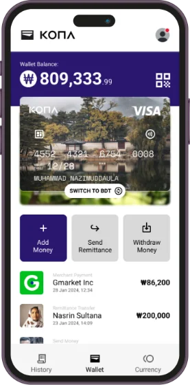
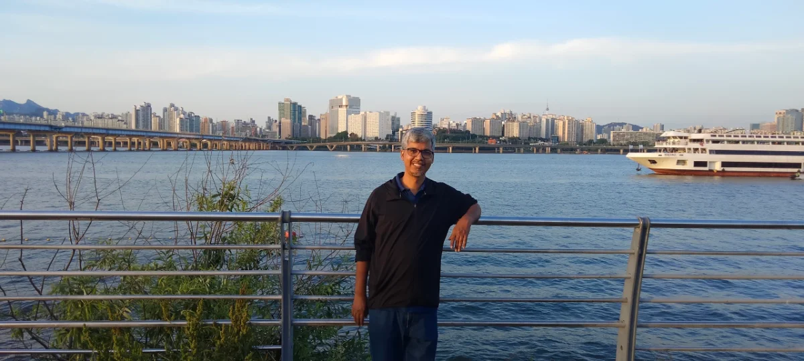

The Context
South Korea has the lowest birth rate in the world. Its population is aging fast, and the shift in demographics is opening the country's borders wider than ever to foreign labor. Bangladesh has become one of the largest sources of that labor, thousands of young, skilled workers moving to South Korea every year, many staying five to ten years before returning home.
They earn well. But not everyone manages that money wisely, and the systems available to them, split between two countries, two currencies, two very different financial systems, weren't built with them in mind.
KONA SL saw the opportunity in that gap. As a South Korean fintech company already embedded in Bangladesh's financial infrastructure, supplying smart card technology to most of the country's banks, KONA was positioned to do something few others could: build a cross-border platform that let migrant workers start building financial foundations at home while still earning abroad.
The Challenge
The product had to work in two fundamentally different environments at once. South Korea is a culturally homogeneous society, and adaptation is one of the hardest things a foreign worker faces there, including access to financial tools designed around Korean norms and language. Bangladesh, meanwhile, has one of the more complex regulatory environments for tech-driven financial products, especially anything crossing borders or touching Bangladesh Bank's oversight.
The product needed to satisfy both realities simultaneously: compliant and trustworthy enough for regulators in Bangladesh, and usable and relevant for a migrant worker navigating life in Korea.
My Role
I joined as Product Director to lead this from the ground up, building a product accessible in Bangladesh first, with South Korea and eventually other neighboring countries as the next phase. Two tracks ran in parallel, plus two more I took on along the way.

The 1st draft of the application for cross-border transactions.
Regulatory approval. I started the documentation process, building the business case that Bangladesh Bank, the country's financial regulatory authority, would need to evaluate a cross-border fintech product, a bar that's demanding even for standard financial products, let alone one spanning two countries.
Product design. Alongside the regulatory work, I designed the first draft of the wallet application, the actual interface migrant workers and their families back home would use, so the proposal to regulators wasn't just a business case, but a tangible product they could evaluate.
On-the-ground research. To design for migrant workers honestly, I spent two weeks in South Korea conducting user research directly with the community, understanding how they actually managed money, what tools they trusted, and where the friction of living between two systems showed up in their daily lives. That trip shaped the wallet's first draft more than any assumption I could have made from Dhaka.
Website redesign. On top of the wallet work, I took on redesigning KONA SL's corporate website end to end, design, content strategy, and copywriting were mine, working with a single developer to bring it to life. Seven months wasn't enough time to see the wallet through to launch, but the website shipped, it's still KONA SL's live site today.
Reflection
I left KONA SL after seven months, an offer from Neura Robotics arrived, and it was one of those opportunities that's genuinely hard to turn down. Looking back, the pace was intense for a short window: building the regulatory business case, designing a first product draft, running two weeks of field research in another country, and rebuilding a company's website, all in parallel. It's the kind of work that doesn't fully show up in a timeline, but it's some of the most demanding and formative work I did before Neura.

On the ground in South Korea, still one of the brightest memories of my career.